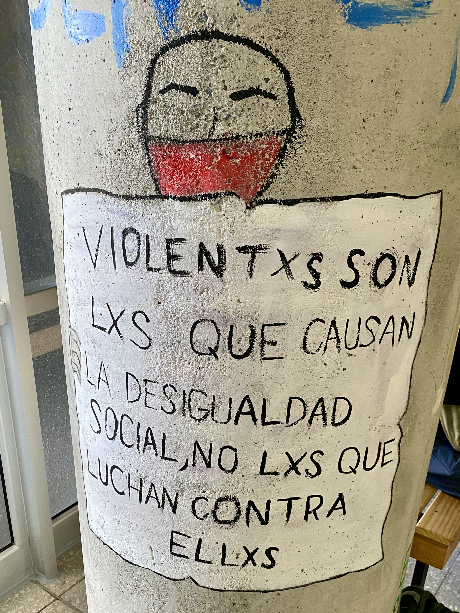

Research
I am currently pursuing two inter-related research agendas, both in early stages. My CV contains links to my prior publications.
The Politics of Precarity
My research under this agenda seeks to explain the political consequences of socioeconomic precarity. Poverty, informal employment, and crime are daily realities for billions of people around the world, but their effects on political behavior and social policy vary widely.
Selected works in progress:
- "Informal Labor and Political Participation"
- "Rebuilding after the Shock" (with Marysol Fernández Harvey and Tianhao Wu)
- "The Politics of Victim Compensation"
- "Who Applies for Victim Compensation?" (with Malore Dusenbery)

Social Movements, Political Parties, and the State
Social movements often struggle to decide whether and how to engage with political parties and the state. While engagement with these institutional actors can bring greater policy influence, it can also lead to co-optation or backlash. My research under this agenda examines how social movements navigate these relationships.
Selected works in progress:
- "Entryism"
- "Identity Politics under Communism: Lessons from Cuba"
- "Indigenous Identity and the Politics of Neoextractivism in Bolivarian Venezuela"